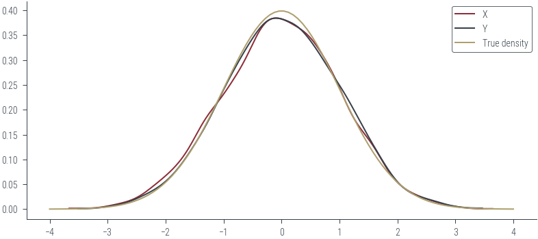
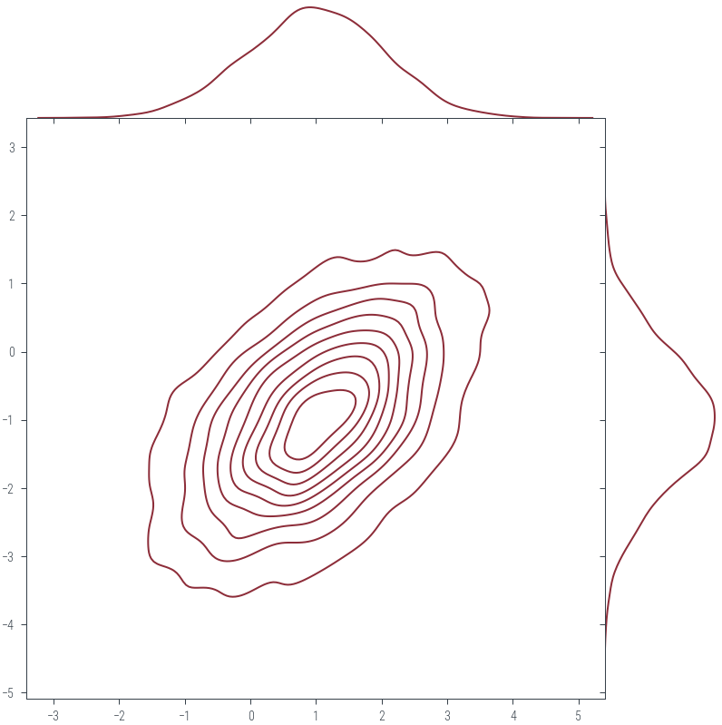

import torch
import numpy as np
import matplotlib.pyplot as plt
import pandas as pd
import matplotlib.pyplot as plt
import seaborn as sns
import arviz as az
%matplotlib inline
# Retina display
%config InlineBackend.figure_format = 'retina'
import warnings
warnings.filterwarnings('ignore')from tueplots import bundles
plt.rcParams.update(bundles.beamer_moml())
# Also add despine to the bundle using rcParams
plt.rcParams['axes.spines.right'] = False
plt.rcParams['axes.spines.top'] = False
# Increase font size to match Beamer template
plt.rcParams['font.size'] = 16
# Make background transparent
plt.rcParams['figure.facecolor'] = 'none'N = 5000
U = torch.rand(N, 2)
U1 = U[:, 0]
U2 = U[:, 1]
R = torch.sqrt(-2 * torch.log(U1))
theta = 2 * np.pi * U2
X = R * torch.cos(theta)
Y = R * torch.sin(theta)
az.plot_kde(X.numpy(), label='X', plot_kwargs={'color': 'C0'})
az.plot_kde(Y.numpy(), label='Y', plot_kwargs={'color': 'C1'})
# Plot true density
x = torch.linspace(-4, 4, 100)
norm = torch.distributions.Normal(0, 1)
plt.plot(x, norm.log_prob(x).exp().numpy(), label='True density', color='C2')
plt.legend()<matplotlib.legend.Legend at 0x7f52ce18d2e0>
### Multivariate Sampling
from scipy.stats import gaussian_kde
true_mean = torch.tensor([1., -1.])
true_cov = torch.tensor([[1., 0.5], [0.5, 1.]])
true_dist = torch.distributions.MultivariateNormal(true_mean, true_cov)
samples = true_dist.sample((N,))
# Generate samples from the true distribution
N = 4000 # Number of samples
samples = true_dist.sample((N,))
sample_data = samples.numpy()
# Calculate KDE using scipy's gaussian_kde
sns.jointplot(x=sample_data[:, 0], y=sample_data[:, 1], kind="kde", space=0, color='C0')
# Find the cholesky decomposition of the covariance matrix
L = torch.cholesky(true_cov)
print(L)tensor([[1.0000, 0.0000],
[0.5000, 0.8660]])L@L.Ttensor([[1.0000, 0.5000],
[0.5000, 1.0000]])Xtensor([ 0.6383, 0.1196, -0.6610, ..., -1.2854, -0.0679, -0.8292])Y.shapetorch.Size([5000])Z_I = torch.stack([X, Y], dim=1)
Z_mu_sigma = Z_I @ L.T + true_meanZ_mu_sigma.shapetorch.Size([5000, 2])sns.jointplot(x=Z_mu_sigma.numpy()[:, 0], y=Z_mu_sigma.numpy()[:, 1], kind="kde", space=0, color='C0')
np.cov(Z_mu_sigma.numpy().T)array([[1.05325545, 0.51403749],
[0.51403749, 1.01457316]])np.mean(Z_mu_sigma.numpy(), axis=0)array([ 0.9873801, -0.992024 ], dtype=float32)